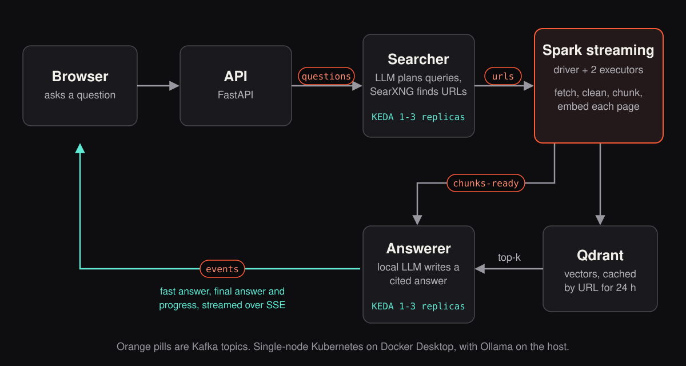

Ask a question; the system searches the live web, reads the pages in parallel and answers with citations using a local LLM. My 2023 diploma thesis, rebuilt on Kafka and Spark.
The thesis answered questions from the web, one sequential step at a time.
What changes if every step becomes its own independent, scalable service?

The LLM writes search queries and SearXNG finds the pages. In the thesis, this was keyword extraction and a Google search.
Spark Structured Streaming fetches, cleans, chunks and embeds each page. The thesis pipeline read them one after another.
Chunks go into Qdrant instead of Elasticsearch. Pages stay cached for 24 hours, so the next question can reuse them.
A fast answer after the first pages, a final one when all are read. The LLM now writes the answers, where the thesis extracted them.
I replayed the 49 questions from the thesis through the full system and graded each final answer against a reference answer.
How far to trust these numbers. The grader is the same small model that writes the answers, and a manual check found it marked at least two correct answers wrong. The thesis measured all candidate answers rather than one final answer, so the two results are not directly comparable. And 33% of page fetches failed, which is the clearest thing left to improve.